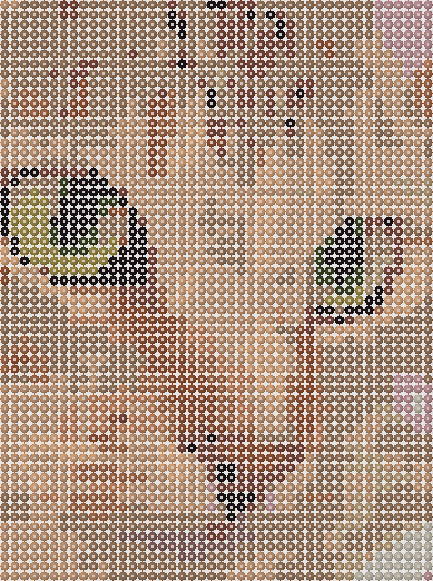
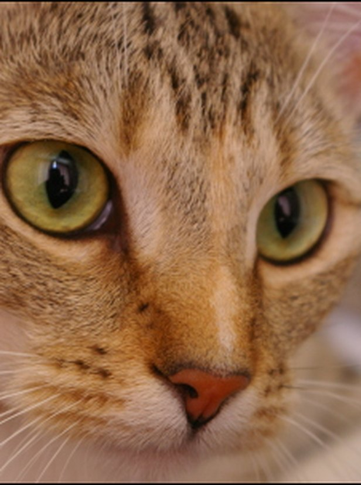
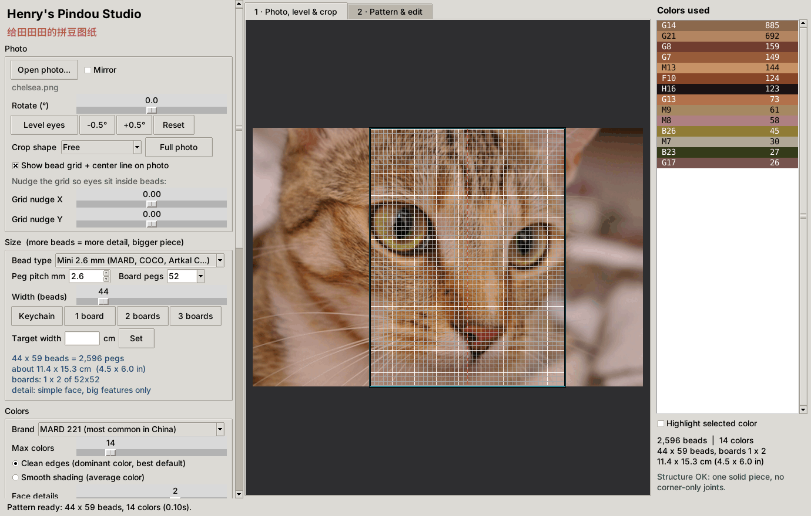
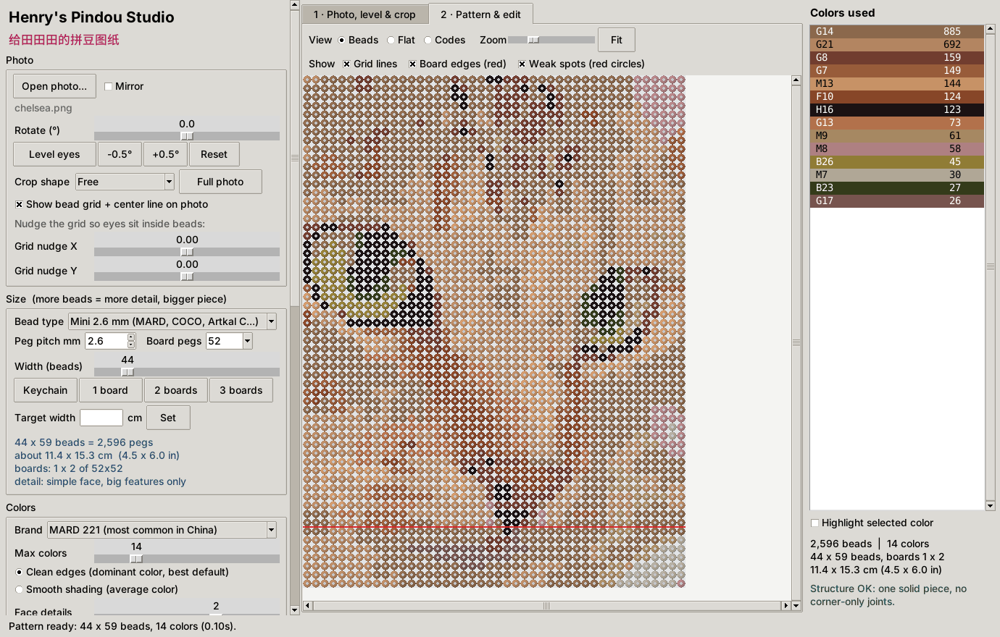
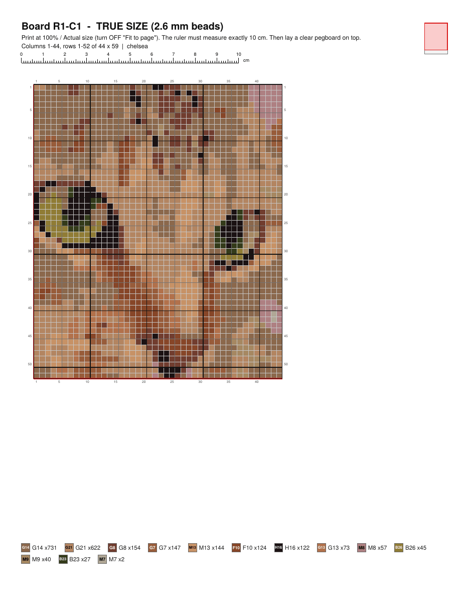
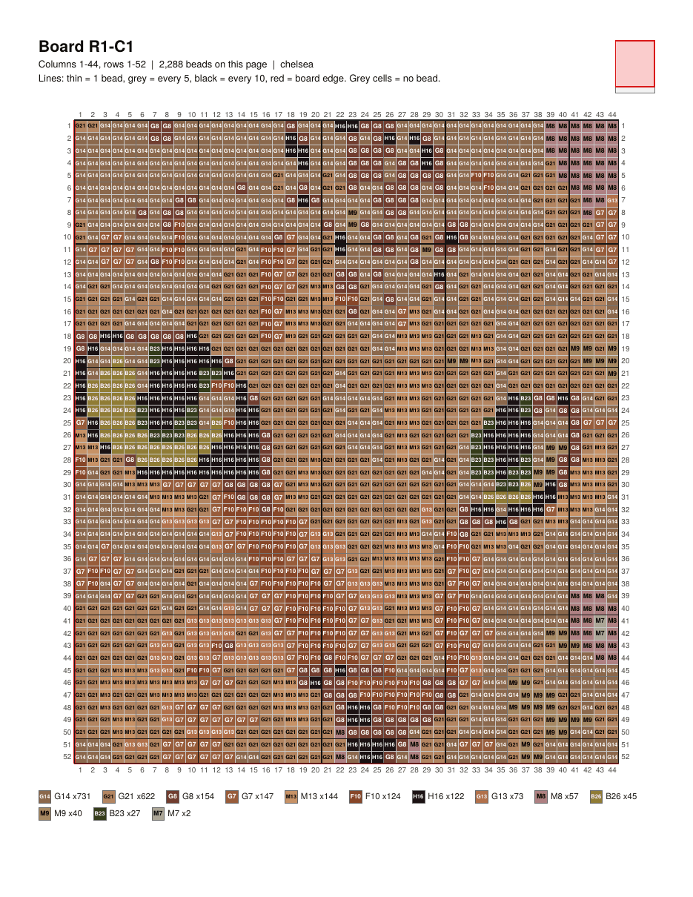

Henry's Pindou Studio
给田田田的拼豆图纸
Turn a photo into a 拼豆 bead pattern you can actually build. It runs on your own computer, so private photos never get uploaded anywhere.
Free for Mac and Windows. Needs Python 3.9 or newer.


Photo BeadsMade for faces
Most photo converters resize blindly, which is why bead faces come out tilted, lopsided or missing their eyes. These are the fixes.
Level the eyes in two clicks
Click one eye, then the other. The photo rotates until they sit perfectly level, so the face stops coming out tilted.
Line the grid up with the eyes
A bead grid sits over your photo. Nudge it until each eye lands inside one bead instead of splitting across two.
Keep the small features
Eyes, brows and lips are often thinner than a bead. Face details stops them from disappearing.
See the size before you start
Drag the width and watch the detail change. The app shows the finished size in cm and how many pegboards you need.
Two tabs, start to finish
Everything updates live while you adjust, and the right side keeps a running count of every color.


Print it, then build it
One export gives you everything for the table. Export a photo called cat.jpg and you get these five files.


- cat_true_size.pdf
- Exact bead spacing for a clear pegboard. 2.6 mm and 5 mm beads.
- cat_chart.pdf
- Overview, legend with bead counts, then a page per board.
- cat_chart.png
- The whole chart as one image for your phone or iPad.
- cat_preview.png
- What the finished piece will look like.
- cat_colors.csv
- Shopping list with about 10% spare per color.
Your beads, your color codes
Pick your brand and the pattern uses that brand's real color codes. Matching uses CIEDE2000, a formula built around how people perceive color difference.
- MARD 221 the most common in China
- MARD 291 221 plus extended series
- COCO 可可 291 colors
- 漫漫 Manman 278 colors
- 盼盼 Panpan 285 colors
- 咪小窝 Mixiaowo 286 colors
- 优肯 Artkal C 2.6 mm, 197 colors
- 优肯 Artkal M MARD-compatible, 221 colors
- Artkal S 5 mm, 199 colors
- Perler 5 mm, 103 colors
- Perler Mini 41 colors
- Hama Midi 5 mm, 92 colors
- Hama Mini 2.5 mm, 78 colors
Already have a kit? Type the codes you own, like A1 B3 H7, and the pattern only uses those. Ran out of a color? Add it to the never-use list.
Get started
About five minutes the first time. After that it opens with a double-click and works offline.
Install Python
Get Python 3.9 or newer from python.org. On Windows, tick "Add python.exe to PATH" in the installer.
Download and unzip
Download the app and unzip it anywhere, for example your Documents folder.
Double-click to open
Mac:
run_mac.command(the first time, right-click it and choose Open). Windows:run_windows.bat. The first launch installs three small libraries.
Tips for a good pattern
- Pick one clear subject on a plain background. Busy photos turn into noise.
- Crop tight. Everything outside the crop costs beads and detail.
- 40 to 60 beads wide is where faces start to read. Mini 2.6 mm beads give about twice the detail of 5 mm.
- 8 to 20 colors is plenty, and each extra color is another bag to sort.
- Fix the red circles before ironing. Beads that only touch at a corner can snap apart.
- Screen colors are approximate, so hold your 色卡 next to the screen before you buy.